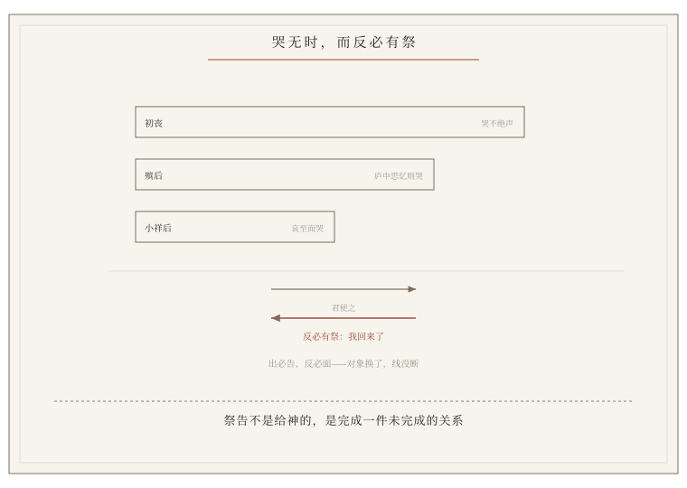

檀弓上 · 三·一百零九 · 第 312 课
父母之丧，哭无时，使必知其反也。
说什么事：父母之丧，小祥之后哭泣没有定时；若此时被君命派出办事，回家时一定要设祭告知，使人知道回来了。
落在哪一层：哀之自主与公事之交。论「哭无时，而反必有祭」。
为何编在此位：上一课论奠之时（依天时），此课论哭之时（不依天时）。一有定时，一无定时，相邻而读，见礼之两面。
【经】父母之喪，哭無時，使必知其反也。
【注】謂既練，或時為君服金革之事，反必有祭。
【疏】礼哭无时有三种：一是初丧未殡之前，哭不绝声；二是殡后，除朝夕之外，庐中思忆则哭；三是小祥之后，哀至而哭，或一日二日，而无复朝夕之时也。此云「哭无时」，谓小祥之后也。何以知然？下云「使必知其反」，是其可使之时也。「使必知其反也」者，「使」谓君使之也；既小祥无哭时，其时可为君所使服金革之事也。反，还也；若为使还家，当必设祭告亲之神，令知其反，亦出必告、反必面之义也。注「谓既练，或时为君服金革之事，反必有祭」者，《礼运》云「三年之丧，期不使」，《公羊传》亦期不使，是知期内不使，则期外可使也。而《曾子问》云「卒哭，服金革之事，无辟」，此鲁侯有为为之也；《丧大记》云卒哭而服金革之事，郑云「权礼也」，是知卒哭而使非正礼也。
哭无时 哭泣没有固定时刻。非「不哭」，是无定时。
练 小祥之祭，在父母丧后十三月。注「谓既练」。
使 被君差遣。
金革之事 兵事。金，兵器；革，甲胄。
反 同返。
反必有祭 回家必设祭以告。
出必告、反必面 《论语·里仁》语，出告反面之常礼。
辟 同避。
权礼 权宜之礼，非正。
父母之丧，哭泣没有定时；若被派出办事，回来一定要设祭告知。
此节两层，一句说哭，一句说反。
先说哭。疏把「哭无时」分成三段，极清楚： - 初丧未殡之前，哭不绝声； - 殡后，除朝夕哭之外，在庐中思忆则哭； - 小祥之后，哀至而哭，或一日二日。
经文此处的「哭无时」，疏断为第三段——小祥之后。理由在下一句：既然说「使」，说明此时已可被君命差遣；而《礼运》《公羊传》皆云「三年之丧，期不使」，期内不可使，期外（即练后）可使。
再说反。既已出仕办事，人就不在家里。回来之时，一定要设祭告亲：「我回来了。」
疏点出这一句的来源：「亦出必告、反必面之义也。」——这本是对活人父母的常礼：出门要告，回家要见。父母已死，这条礼没有废，只是把「面」换成了「祭」。
这一换，是全节最动人的地方：父母不在了，出门还是要告，回来还是要报。礼不肯让这条线断，便给它另找了一个对象。
第一层 「无时」不是「无度」 哭无时，易被读作放任。疏的三段分法说明它极有层次：不绝声（初丧）、庐中思忆（殡后）、哀至而哭（小祥后）。每一段都有自己的「度」，只是度不由钟点定，由哀定。
礼在此把时间的支配权交还给哀本身。这是礼最信任人的一处：它相信哀知道什么时候来。
第二层 「期不使」与「权礼」 疏引三处礼文，辨出一层深浅：《礼运》《公羊传》「三年之丧，期不使」，是正礼；《曾子问》「卒哭，服金革之事，无辟」与《丧大记》「卒哭而服金革之事」，郑玄断为「权礼」——鲁侯有为而为之，非正。
这一段辨极重要：礼承认在国家有事的时刻，丧期可以被压缩；但它明确标注这属于「权」，不属于「正」。正与权并存而分标，是礼家的诚实：它不把权宜说成常法，也不因常法而否认权宜的存在。
第三层 祭告的分量 「反必有祭」，注只说「反必有祭」，疏补出「令知其反」。这一祭，不是谢神，是报平安。对一个已死的人报平安，听起来无理；但礼照做。
这正是丧礼的根本姿态：一切对死者的动作，都是生者在完成一件未完成的关系。出告反面，是子女与父母之间最日常的一条线；父母死了，这条线不能断，就改由祭来承接。
第四层 与 311 的对照 311 的奠有定时（日出、日落），此节的哭无定时。同是一个人，同是一段丧期：对死者的供奉要准时，对自己的哀哭不必准时。礼把「为人」与「为己」分开：待死者以时，待自己以情。
与今日何干 今人出差回家，还会对遗像说一句「我回来了」。此节把这句话立成了礼。它不是迷信，是一条不肯断的线。
| 左 | 右 |
|---|---|
| 父母之丧 | 所论之服 |
| 哭无时 | 三段各有其度 |
| 既练 | 小祥之后 |
| 期不使 | 正礼 |
| 卒哭而使 | 权礼 |
| 使 | 君命之差 |
| 反必有祭 | 告其反 |
| 出告反面 | 对活人之常礼，移于祭 |
画一处庐次之外，视点平视。画面左侧是一座倚墙而筑的草庐（庐门低矮、茅顶），庐前一人（背向观者、正俯身入庐）。画面右侧是一条通向远处的道，道上一位行者（背向观者、负行囊、正回身向庐的方向），道旁立着一根短柱。庐前地上另设一小案，案上一盂一豆。不写文字、不画人面细节。赭色只用在行者回身时肩上行囊的系带，与案上那只盂的边沿。
